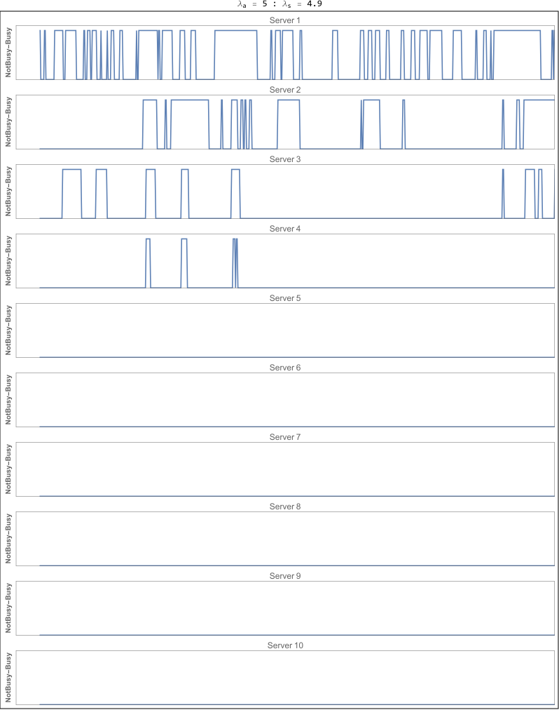
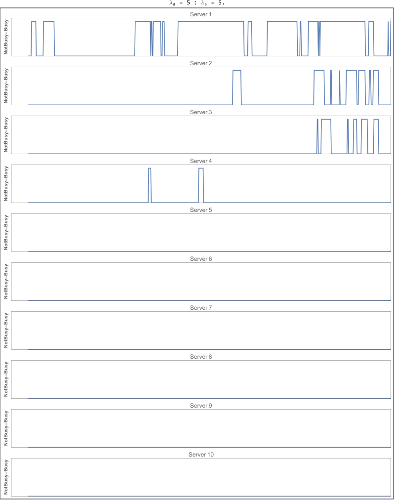
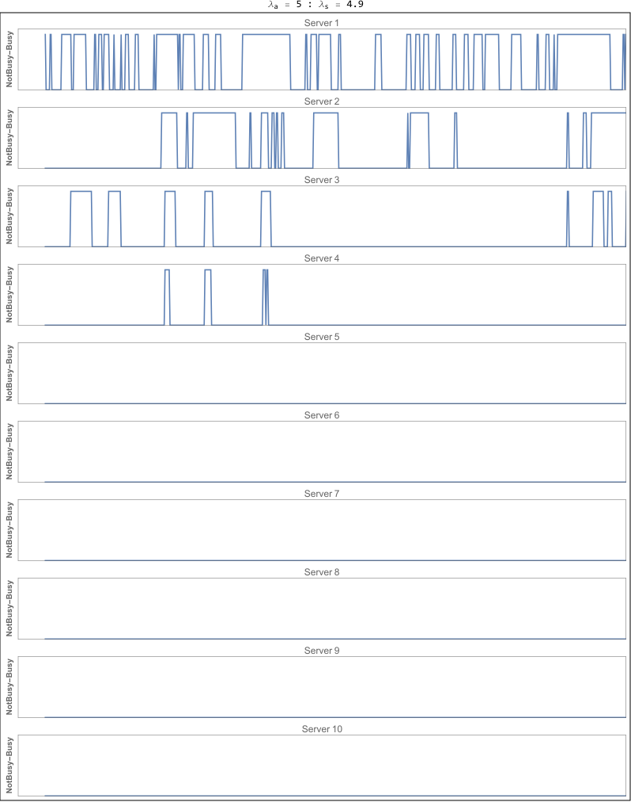
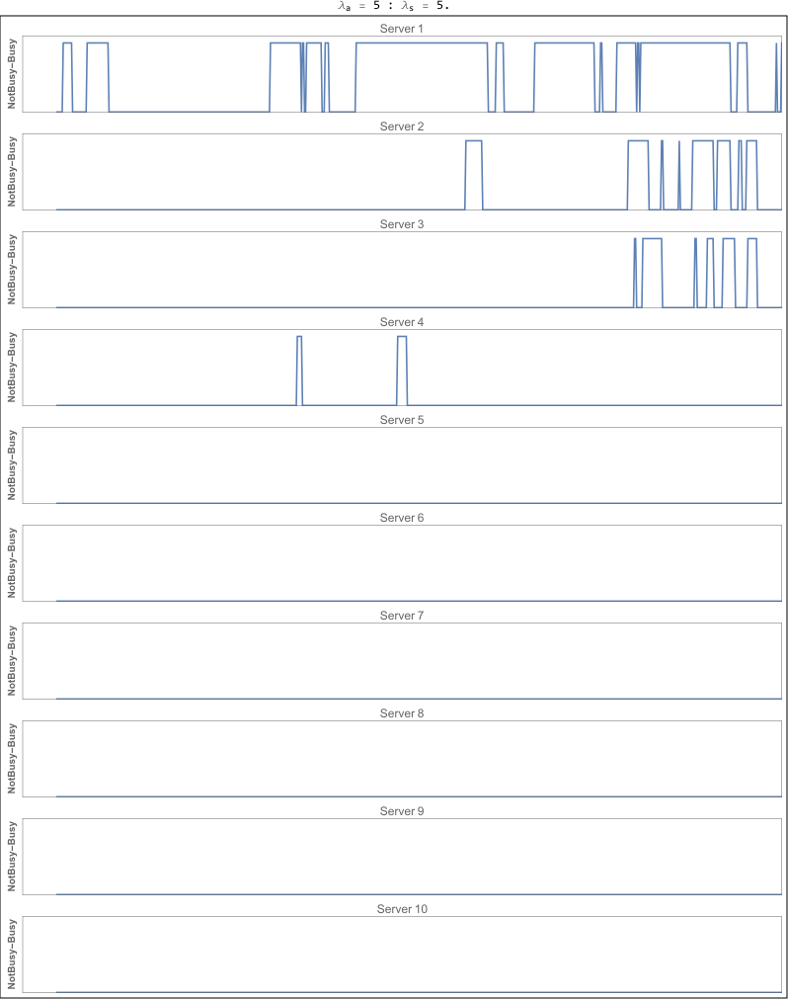
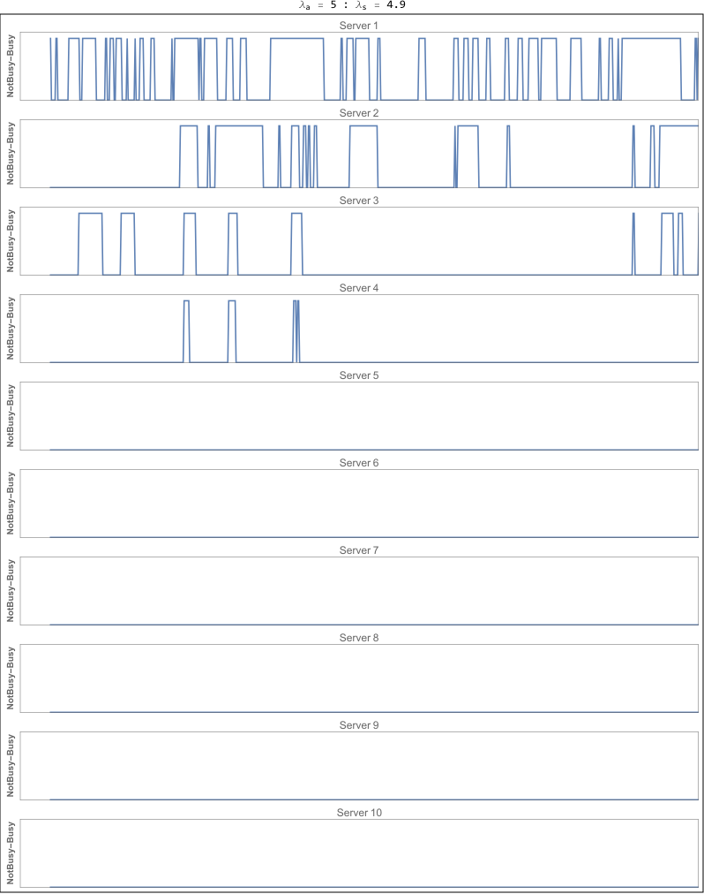
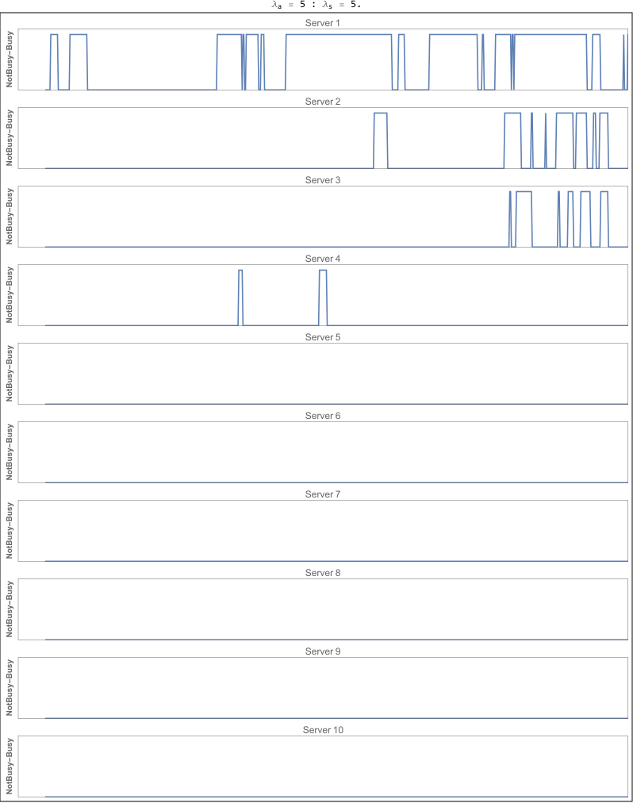

Question: Consider one of the simplest systems of mass servicing. This system consists of \(n\) lines (or channels, or servicing stations) each of which can "serve on the customers". The system receives requests arriving at random moments of time. Each request arrives at the \(N_{1}\) line. If the arrival time of the k-th request ( let us call it \(T_{k}\) ) finds this line free, the line starts servicing the request; this takes \(t_{b}\) minutes (\(t_{b}\) is the holding time of the line). If \(N_{1}\) line is busy at the moment \(T_{k}\) the request is immediately transferred to the \(N_{2}\) line and ... so on. Finally, if all n lines are busy at the moment \(T_{k}\) , the system rejects the request. The problem is, what will be the (average) number of requests serviced by the system during the period \(T\) and how many rejections will be given?
Below is a slide show of the various combinations of the \(\lambda_{a}\) and \(\lambda_{s}\)


ClearAll[status, currentStatus];
status[list_List, time_] := Boole[Or @@ (Min[#] < time <= Max[#] & /@ list)]
currentStatus[list_List, time_] := ! Min[#] < time <= Max[#] &[Last[list]]
Module[{servers = 10, serverStatus, nCustomers = 120,
arrivals, \[Lambda]a = 5, \[Lambda]s = #, firstFree, plot},
arrivals = Accumulate[RandomVariate[ExponentialDistribution[\[Lambda]a], nCustomers]];
serverStatus = ConstantArray[{{0, 0}}, servers];
Quiet@Table[
firstFree =
First[Position[
currentStatus[#, arrivals[[r]]] & /@ serverStatus,
True]][[1]];
If[firstFree =!= Null,
firstFree = First[firstFree][[1]];
serverStatus[[firstFree]] =
serverStatus[[firstFree]] ~
Join ~ {{arrivals[[r]],
arrivals[[r]] +
RandomVariate[ExponentialDistribution[\[Lambda]s]]}};,
Print["No server free"]]
, {r, 1, Length@arrivals}];
plot =
Labeled[Framed@
Column[MapThread[
Plot[status[#1, r], {r, 1, 100}, Exclusions -> None,
ExclusionsStyle -> Red, ImageSize -> 788,
AspectRatio -> 0.1, Frame -> True,
PlotRange -> {{0, Max@arrivals}, {0, 1.1}},
PlotLabel -> "Server " <> #2, FrameTicks -> False,
FrameLabel -> {None,
Style["NotBusy-Busy", Bold]}] &, {serverStatus,
ToString /@ Range[Length@serverStatus]}]],
"\!\(\*SubscriptBox[\(\[Lambda]\), \(a\)]\) = " <>
ToString[\[Lambda]a] <>
" : \!\(\*SubscriptBox[\(\[Lambda]\), \(s\)]\) = " <>
ToString[\[Lambda]s], Top];
Export[
StringReplace[NotebookFileName[],
".nb" ->
"_rates_" <> ToString[\[Lambda]a] <> "_" <>
ToString[\[Lambda]s] <> ".png"], plot, ImageSize -> 788,
ImageResolution -> 1000]
] & /@ Range[0.1, 5, 0.1]